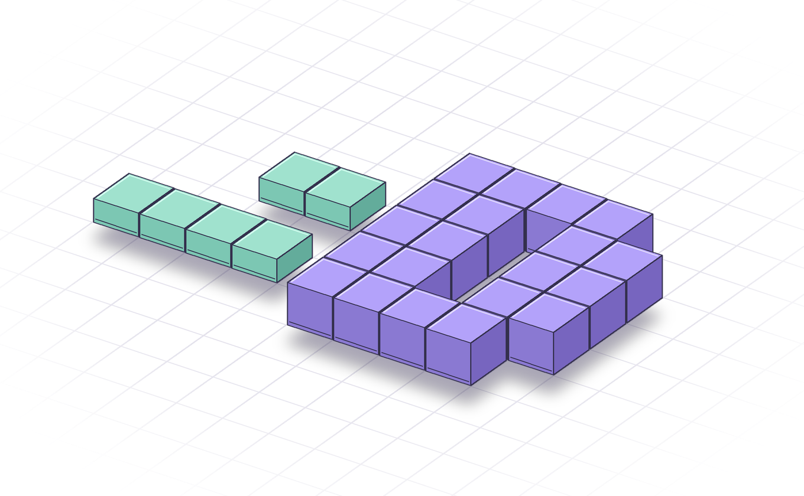

Was ist auf dem Server anders?
drift zeigt dir im Terminal, wo sich lokale Dateien und Serverstand unterscheiden. Du entscheidest für jede Datei, welche Fassung du überträgst.

drift im Einsatz
Zeile für Zeile vergleichen
Prüfe hinzugefügte und entfernte Zeilen. Für jede Datei kannst du einen Upload, Download oder Löschvorgang wählen oder sie überspringen.

Beide Verzeichnisse nebeneinander
Verbinde die rechte Seite mit @ mit einem Host. Markiere Dateien oder ganze Ordner mit der Leertaste und öffne mit s den Vergleich.

Zwischen Projekten wechseln
Öffne die Projektübersicht mit drift dash. Jedes Projekt hat eigene Hosts und Pfade. Im Dateibrowser wechselst du mit P das Projekt.

Ein Upload in 27 Sekunden
Die Aufnahme zeigt die Dateiauswahl, den Diff und den bestätigten Upload. Beim nächsten Vergleich stimmen beide Dateien überein.
drift installieren
Du brauchst Linux oder macOS, Go ab Version 1.25 und Git. Das Go-Binärverzeichnis muss in deinem PATH stehen.
go install github.com/WariKoda/drift@latest
Starte drift im Projektordner. Mit H öffnest du die Hostverwaltung und mit n legst du deinen ersten Host an.